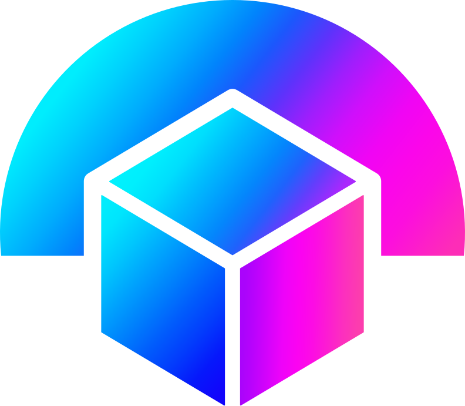

VR outside the box. Think outside the box. Render there too.
VROSTBridge is an open-source remote PCVR bridge: it streams SteamVR games from a Windows rendering PC to a PC VR headset plugged into a second PC, running Bazzite Linux or Windows. Start sessions from the headset PC; the Windows rendering PC waits in its tray.
Read the README: what it is, what you need and how to get started. To use VROSTBridge, install the release packages rather than building this source.
VROSTBridge is distributed under the licence in LICENSE (MIT). Third-party components remain subject to their respective licences and notices (NOTICE, THIRD_PARTY.md, credits); licences in plain words explains what that means.
VROSTBridge is an independent open-source project and is not affiliated with or endorsed by Valve Corporation, Bigscreen, or other hardware/platform manufacturers. Third-party names and marks belong to their respective owners.